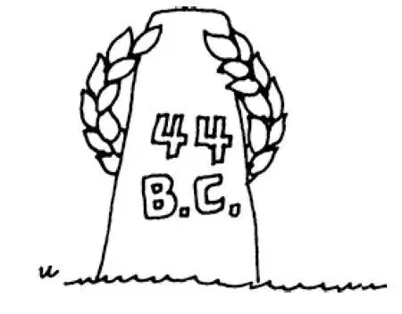

34
The Noblest Roman of Them All
罗马人中的最高贵者

HERE'S a puzzle for you:
A man once found a very old piece of money that had on it the date 100 B.C.
That couldn't be so. Why not? See if you can tell without looking at the answer at the bottom of the page.
In the year 100 B.C. was born in Rome a boy who was named Julius Caesar.
If you had asked him when he was born, he would have said in the Year 653.
Why do you suppose?
Because Roman boys counted time from the founding of Rome in 753 B.C. and Caesar was born 653 years after the city was founded. That makes it 100 years before Christ, doesn't it?
Pirates seemed to be everywhere in the Mediterranean Sea at that time—Pirates. Now that Rome was ruler of the world, there were many ships carrying gold from different parts of the empire to Rome. The pirates sailed up and down, lying in wait to capture and rob these ships laden with gold.
When Caesar grew to be a young man, he was sent off to sea to fight these pirates, and he was captured by them. The pirates kept Caesar a prisoner and sent to Rome saying they would not let him go unless Rome sent them a great deal of money. Caesar knew that he would be killed if the money was not sent. He knew, too, that he might be killed anyway. He was not only not afraid, but he told the pirates that if he lived to get back home he would return with a fleet and punish every one of them. When at last the money came they let him go, nevertheless. They thought Caesar would not dare to do what he said. They thought he was just talking big. At any rate, they did not believe he would be able to catch them. Caesar, however, kept his word, came back after them as he said he would do, and took them prisoners. Then he had them all put to death on the cross, which was the Roman way of punishing thieves.
The far-off places of the Roman Empire were always fighting against Rome, trying to get rid of the foreign rule, and they had to be kept in order by a general with an army. As Caesar had shown such bravery in fighting the pirates he was given an army and sent to fight two of these far-off places—Spain and a country north of Spain then known as Gaul, which is now France.
Caesar conquered these countries, and then he wrote a history of his battles in Latin, which of course was his own language. Nowadays this book, called Caesar's Commentaries, is usually the first book read by those who study Latin.
In 55 B.C. Caesar crossed over in ships to the island of Britain, conquered a large part of it, and went back again next year, in 54 B.C.
Caesar was becoming famous for the way he conquered and ruled over the western part of the Roman Empire. Besides this, he was very popular with his soldiers.
Now there was in Rome at this time another general named Pompey. Pompey had been successfully fighting in the eastern part of the Roman Empire while Caesar had been fighting in the west. Pompey had been a great friend of Caesar, but when he saw how much land Caesar had conquered and how popular he was with his soldiers, he became very jealous of him. Notice how many quarrels and wars are caused simply by jealousy. You have heard of at least two already.
While Caesar was away with his army, Pompey went to the Roman Senate and persuaded the senators to order Caesar to give up the command of his army and return to Rome.
When Caesar received the order from the Senate to give up his command and return to Rome, he thought over the matter for some time. Then at last he made up his mind that he would return to Rome, but he would not give up his command. Instead, he decided that he and his army would take command of Rome itself.
Now, there was a little stream called the Rubicon , which separated the part of the country over which Caesar was given charge from that of Rome. The Roman law forbade any general to cross this stream with an army ready to fight——this was the line beyond which he must not pass, for the Romans were afraid that if a general with an army got too close to Rome he might make himself king.
When Caesar decided not to obey the Senate, he crossed this stream—the Rubicon—with his army and marched on to Rome.
People now speak of any dividing line from danger as “the Rubicon” and say that a person “crosses the Rubicon” when he takes a step from which there is no turning back, when he starts something difficult or dangerous which he must finish.
When Pompey heard that Caesar was coming, he took to his heels and fled to Greece. In a few days Caesar had made himself head not only of Rome but of all Italy. Caesar then went after Pompey in Greece and in a battle with his army beat him badly.
Now that Pompey was out of the way, Caesar was the chief ruler of the whole of the Roman Empire.
Egypt did not yet belong to Rome. Caesar next went there and conquered that country. Now, in Egypt there was ruling a beautiful queen named Cleopatra. Cleopatra was so charming that she seemed able to make everyone fall in love with her. Cleopatra flirted with Caesar and so fascinated him that he almost forgot everything else. Although he had won Egypt, he allowed Cleopatra to remain queen over that country.
Just at this time some people in the far eastern part of the empire started a war to get rid of the rule of Rome. Caesar left Egypt, traveled rapidly to the place where the enemy were, made quick work of conquering them, then sent back the news of his victory to Rome in the most laconic (do you remember what that means?) description ever given of a battle. There were only three words in the message. Although the messenger could have carried three thousand as easily as three words, Caesar sent a message that would have been short even for a telegram. He wrote, “Veni, vidi, vici,” which means, “I came, I saw, I conquered.”
When Caesar at last got back to Rome, the people wanted to make him king, or said they did. Caesar was already more than king, for he was head of the whole Roman Empire. But he wasn't called king, for there had been no kings since 509 B.C., when Tarquin was driven out. The Romans had been afraid of kings and hated them, or were supposed to hate them.
A few of the people thought that Caesar was getting too much power and believed it would be a terrible thing to make him a king. They therefore decided on a plot to prevent such a thing happening. One of these plotters was a man named Brutus, who had been Caesar's very best friend.
One day when Caesar was expected to visit the Roman Senate, they lay in wait for him until he should appear—in the same way I have seen boys hide around the corner for some schoolmate, against whom they had a grudge, until he should come out of school.
Caesar came along, and just as he was about to enter the Senate the plotters crowded around him, and one after another they stabbed him.
Caesar, taken by surprise, tried to defend himself; but all he had was his stylus, which was a kind of pen he used for writing, and he could not do much with that, in spite of a famous saying, “The pen is mightier than the sword.”
When at last Caesar saw Brutus—his best friend—strike at him, his heart seemed broken and he gave up. Then, exclaiming in Latin, “Et tu, Brute!” which means, “And thou, O Brutus!” he fell down dead. This was in 44 B.C.
Antony, one of Caesar's true friends, made a speech over Caesar's dead body, and his words so stirred the crowd of people that gathered round that they would have torn the murderers to pieces if they could have caught them.
Shakespeare has written a play called Julius Caesar, and the month of July is named after him.
Now whom do you suppose Antony called “The Noblest Roman of Them All”？
“Julius Caesar”?
No, you're wrong. Brutus, the friend who stabbed Caesar, was called, “The Noblest Roman of Them All.”
Why, do you suppose?
You'll have to read Antony's speech at the end of the play to find out.
Caesar was pronounced in Latinkaiser; and in later years the rulers of Germany were called this, and those of Russia by the shortened form,czar.
【中文阅读】
下面是给你出的一道智力题：
有个人曾发现了一块非常古老的钱币，上面的日期是公元前100年。
那是不可能的。为什么不可能呢？你先不要看后面的答案，看看能不能解答出来。
公元前100年，有个男孩在罗马出生了，名叫尤利乌斯•恺撒。
如果你问他，他是哪年出生的，他会说是在653年。
你想想这是为什么？
因为罗马男孩计算年代是以公元前753年罗马建成的时候为起点的，而恺撒是在罗马城建成后第653年出生的。按我们的纪年就是公元前100年，是不是啊？
在那个时代，地中海上似乎到处都有海盗横行——真正的“海上强盗”。既然罗马统治着世界，所以就有很多的船只从帝国各地载着黄金来到罗马。海盗们四处航行，暗中埋伏伺机俘获并抢劫这些装满黄金的船只。
当恺撒长大成人后，他受命去海上剿灭这些海盗，但却被他们俘虏了。海盗将他关起来，派人传话给罗马，说如果罗马不给他们送来大笔赎金，他们就不放他走。恺撒知道如果钱不送来的话，他就会被杀掉。他也知道，即使钱送来了，他还有可能被杀掉。他不仅不害怕，而且还告诉海盗们如果他能活着回罗马，他会带着一支舰队回来，狠狠惩罚他们，到时候一个都不会放过。不过，最后钱送来了，他们还是放了他。他们觉得恺撒不敢按他自己说的那样去做，认为他只是在说大话罢了。无论如何，他们都不相信他能够逮到他们。但是，恺撒却说到做到，回来追捕他们，一如他所说的那样，把他们都抓起来了。然后，他将他们全部钉死在十字架上，这是罗马人惩罚盗贼的方式。
罗马帝国一些偏远的属地总是不断地反抗罗马，想摆脱异国的统治。此时需要一位大将统领军队去平息叛乱。因为恺撒在与海盗的交战中表现得英勇无畏，于是让他率领一支军队，然后被派遣去与两个遥远的属地作战，这两个地方是西班牙和 西班牙北边一个叫高卢的地区，高卢就是现在的法国。
恺撒征服了这些地区。后来，他用拉丁语把他所经历的战役写成了一部历史书，当然，拉丁语就是他的母语。如今，这本名为《高卢战记》的书通常是学习拉丁语的人必读的第一本书。
公元前55年，恺撒乘船横渡到了大不列颠岛，征服了岛上很大一块地区，并于次年——公元前54年再次远征大不列颠。
恺撒因为迅速有力地征服和治理罗马帝国西部的广大地区而声名远扬。除此之外，他还深受手下士兵的爱戴。
在这个时期，罗马还有一位将军名叫庞培。当恺撒在罗马帝国西部征战时，庞培在罗马帝国东部的征战也节节胜利。庞培曾是恺撒的挚友，但是当他看到恺撒征服了那么多的土地又那么受士兵们爱戴的时候，他就十分妒忌恺撒。看看，仅仅由于妒忌就引起了多少纠纷和战争啊！你到目前至少已听说两例了。
正当恺撒战征在外的时候，庞培去了罗马的元老院，说服议员们下令要恺撒交出兵权，返回罗马。
恺撒接到元老院让他交出兵权，返回罗马的命令后，认真考虑了一段时间。最终，他作出决定返回罗马，但是他绝不交出兵权。相反，他决定，他要领军接管罗马。
在恺撒掌管的地区和罗马城之间有一条小河叫“卢比孔河”，罗马法律禁止任何带领手执兵器士兵的将领越过这条河——这是一条他决不能逾越的分界线，因为罗马人担心，万一有哪个将军领军逼近罗马，他就可能会擅自称王。
恺撒决心不再服从元老院后，他跨过了这条河——卢比孔河，率领着军队朝罗马进发。
现在，人们把任何一条将危险隔开的分界线说成是“卢比孔河”。假设有个人必须完成的事业困难重重，危险万分，但是为了打开局面，毅然迈出了义无反顾的一步，人们就会说他“越过了卢比孔河”。
庞培听说恺撒来了，就立即逃往希腊。几天后，恺撒让自己不仅成了罗马、而且成了整个意大利的头领。随后恺撒追赶庞培去了希腊，在一次战役中把庞培打得惨败。
既然庞培这只“拦路虎”被清除了，恺撒于是成了整个罗马帝国的最高统治者。
埃及当时还不属于罗马。恺撒接下来去了埃及并征服了这个国家。当时，统治埃及的是一位美丽的女王，名叫克娄巴特拉。克娄巴特拉魅力非凡，似乎可以让每个人都爱上她。克娄巴特拉向恺撒调情，让他神魂颠倒，几乎忘记了其他的一切。尽管他占领了埃及，但是他允许克娄巴特拉继续做埃及的女王。
就在此时，在帝国的最东部有一些人挑起了战争，要摆脱罗马的统治。恺撒离开了埃及，迅速来到叛乱地点，很快镇压了他们，然后，他派人把捷报送回了罗马，用的是迄今为止最具拉科尼亚（还记得这个词是什么意思吗？）含义的方式描述了这次胜利。
信中只有三个词。虽然对信使来说，传递一封有三千词的信和三个词的信没有什么区别，但是恺撒的信非常简短，即使用电报来发也很方便。他写道：“Veni, vidi, vici,”这三个拉丁语单词的意思就是“我来了，我看见了，我征服了。”
恺撒最后回到了罗马，这时，罗马人民都想让他当君王，至少他们是这样表达的。恺撒此时岂止是王，因为他实际上可以说是整个罗马帝国的皇帝。但是，人们不喊他君王，因为自从公元前509年塔克文被赶走之后就再没有君王了。罗马人过去对君王既怕又恨，或者现在他们应该还是痛恨君王。
有些人觉得恺撒正在攫取过多的权力，认为让他成为君王将是十分可怕的。因此，他们为了防止这样的事发生就商定了一个阴谋。策划人中有一个叫布鲁图的人，他曾是恺撒最好的朋友。
预计恺撒要去元老院的那天，他们埋伏以待，直到他露面——我见过有些男孩用这同样的方式躲在角落里暗中守候某个他们怨恨的同学，直到他从学校里出来。
恺撒来了，就在他正要进元老院的时候，密谋者们一拥而上把他围起来，你一剑我一刀地向他捅去。
恺撒大吃一惊，试图自卫，但是他随身带的只有一支书写用的铁笔，而用这支笔他根本做不了什么反抗，尽管有名言说：“笔诛胜于剑伐。”
最后，当恺撒看到布鲁图——他最好的朋友——向自己刺来的时候，他的心似乎碎了，他放弃了抵抗。接着，他用拉丁语大声地叫道：“Et tu, Brute! ”意思就是：“还有你，噢，布鲁图！”然后倒地身亡。这件事发生在公元前44年。
安东尼是恺撒忠诚的朋友之一，他站在恺撒的遗体旁发表了一篇演说，他的演说措辞激烈，聚集在周围的人听了以后怒火中烧，如果此时他们能逮到那些谋杀犯，他们肯定会把这些人撕成碎片的。
莎士比亚写过一部戏剧叫《尤利乌斯•恺撒》。七月这个月份（July）就是以恺撒的名字“Julius”命名的。
现在，你猜安东尼所说的“罗马人中最高贵的那个人”是谁？
“尤利乌斯•恺撒”？
不，你错了。布鲁图，那个刺杀恺撒的好朋友，才是被称为“罗马人中最高贵的人”。
你猜为什么？
你必须读一下莎士比亚写的那部戏剧，在戏剧的结尾从安东尼的演说中找到答案。
“恺撒”这两个字是按拉丁语的读音译的，后来德国统治者的称号也是读这个音，俄国的统治者被称为“沙皇”、“沙”(Czar）就是“恺撒”(Caesar）的简称。

公元前44年